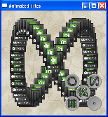

Qt 5.3
Animation Framework Examples
Qt 5.3.1 Reference Documentation
Animation Framework Examples

Animated Tiles
Application Chooser
Easing Curves
Move Blocks
*
States
Stick man
*
Sub-Attaq
Examples marked with an asterisk (*) are fully documented.